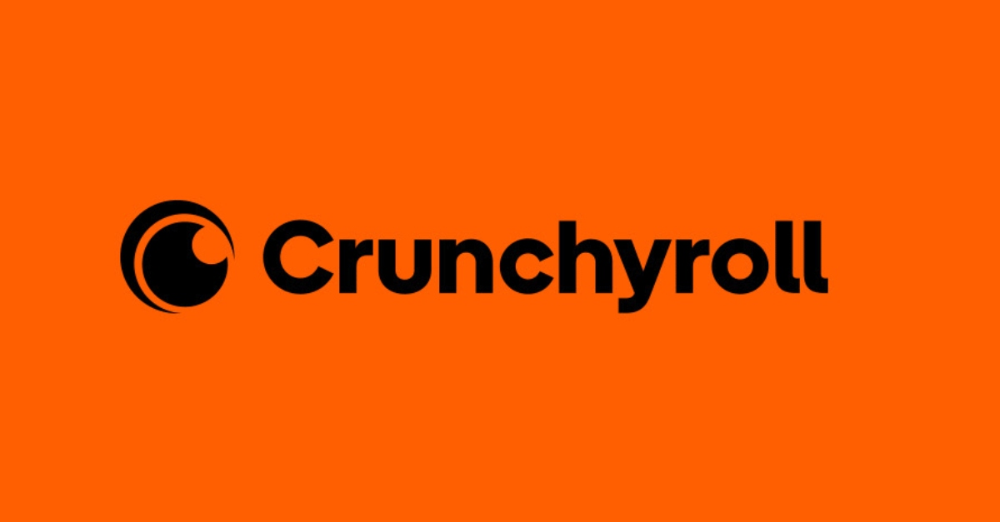

There are multiple ways you can watch My Deer Friend Nokotan. The place I watch My Deer Friend Nokotan is Crunchyroll, although that requires a Crunchyroll subscription, which costs about $8 a month.
Picture source was found at this site
If you just want to check out My Deer Friend Nokotan without paying for a full streaming service, you can find all 12 episodes on YouTube.
Here's the link for a 4 hour video with all 12 episodes :3